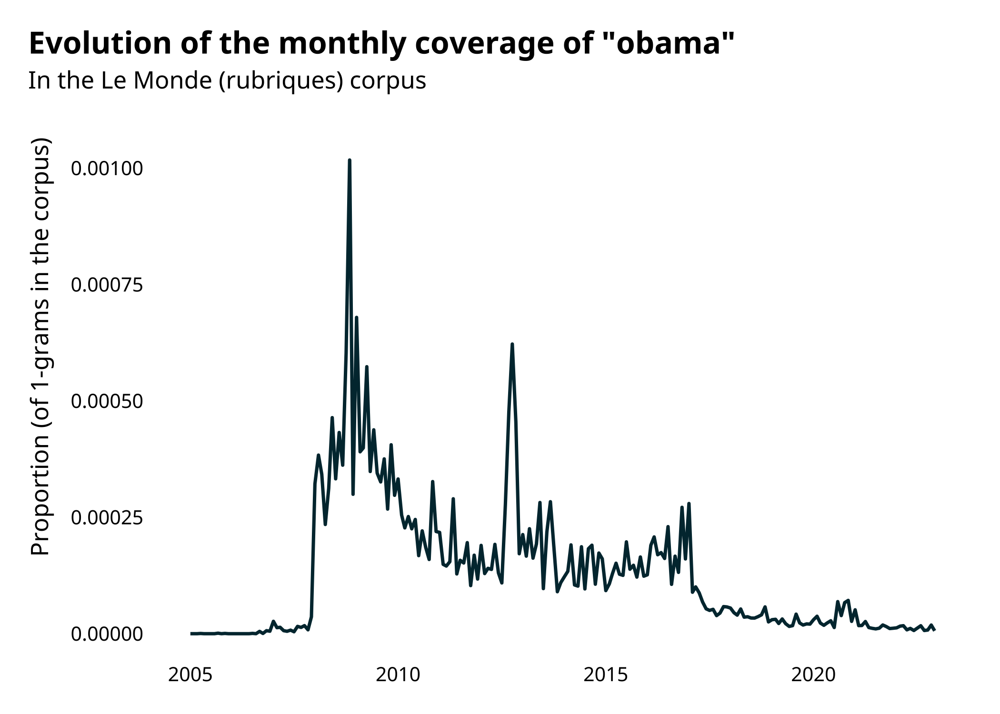

Overview
rallicagram is a R wrapper for the Gallicagram API.
Gallicagram is a super nice tool and set of databases that enables to easily run simple Natural Language Processing (NLP) analyses on a wide set of corpora. In particular, it enables to build historical time series of occurrences of keywords in various media in one line of code.
Installation
You can install the development version of rallicagram from GitHub with:
# install.packages("pak")
pak::pak("vincentbagilet/rallicagram")Usage
The main function, gallicagram, builds a data frame with the yearly, monthly or daily proportion of mentions of a term.
library(rallicagram)
gallicagram(keyword = "président", corpus = "lemonde", from = 1960)
#> # A tibble: 756 × 10
#> date keyword n_occur n_total prop_occur year month corpus resolution
#> <date> <chr> <int> <int> <dbl> <int> <int> <chr> <chr>
#> 1 1960-01-01 président 1338 872943 0.00153 1960 1 lemon… monthly
#> 2 1960-02-01 président 1360 915672 0.00149 1960 2 lemon… monthly
#> 3 1960-03-01 président 1461 928764 0.00157 1960 3 lemon… monthly
#> 4 1960-04-01 président 1239 772707 0.00160 1960 4 lemon… monthly
#> 5 1960-05-01 président 1355 835612 0.00162 1960 5 lemon… monthly
#> 6 1960-06-01 président 1314 850245 0.00155 1960 6 lemon… monthly
#> 7 1960-07-01 président 1189 942062 0.00126 1960 7 lemon… monthly
#> 8 1960-08-01 président 979 739018 0.00132 1960 8 lemon… monthly
#> 9 1960-09-01 président 1506 904804 0.00166 1960 9 lemon… monthly
#> 10 1960-10-01 président 1107 826661 0.00134 1960 10 lemon… monthly
#> # ℹ 746 more rows
#> # ℹ 1 more variable: n_of <chr>It enables to draw nice graphs representing the evolution of the use of a term in time, in two lines of code.

The package also allows to describe co-occurrences or words associated with a keyword. The corresponding functions are described in the vignette.
Corpora
The corpora available via Gallicagram are the following. Note, for now, there are two “Le Monde” corpora, with different functions associated with each (this is a feature of the data base and will evolve shortly).
| Corpus Name | Corpus | Reliable From | Reliable To | Max Length | Resolution | Number Of Words | Available Functions |
|---|---|---|---|---|---|---|---|
| Le Monde (rubriques) | lemonde | 1945 | 2024 | 3 | monthly | 1.5e+09 | article|cooccurr_article|associated_article|with|associated |
| Presse de Gallica | presse | 1789 | 1950 | 3 | monthly | 5.7e+10 | cooccurr|with|associated |
| Livres de Gallica | livres | 1700 | 1940 | 5 | yearly | 1.6e+10 | cooccurr|with|associated |
| Presse + livres de Gallica | presse_livres | 1789 | 1940 | 3 | yearly | 7.3e+10 | - |
| Deutsches Zeitungsportal (DDB) | ddb | 1780 | 1950 | 2 | monthly | 3.9e+10 | with|associated |
| American Stories | american_stories | 1798 | 1963 | 3 | yearly | 2e+10 | with|associated |
| The Guardian | guardian | 1999 | 2026 | 2 | daily | 2e+09 | with|associated |
| Journal de Paris | paris | 1777 | 1827 | 2 | daily | 8.6e+07 | cooccurr|with|associated |
| Moniteur Universel | moniteur | 1789 | 1869 | 2 | daily | 5.11e+08 | cooccurr|with|associated |
| Journal des Débats | journal_des_debats | 1789 | 1944 | 1 | daily | 1.2e+09 | cooccurr |
| La Presse | la_presse | 1836 | 1869 | 2 | daily | 2.53e+08 | cooccurr |
| Le Constitutionnel | constitutionnel | 1821 | 1913 | 2 | daily | 6.4e+07 | cooccurr |
| Le Figaro | figaro | 1854 | 1952 | 2 | daily | 8.7e+08 | cooccurr|with|associated |
| Le Temps | temps | 1861 | 1942 | 2 | daily | 1e+09 | cooccurr|with|associated |
| Le Petit Journal | petit_journal | 1863 | 1942 | 2 | daily | 7.45e+08 | cooccurr|with|associated |
| Journal officiel | journal_officiel | 1869 | 1952 | 1 | daily | 8.42e+08 | cooccurr |
| Le Petit Parisien | petit_parisien | 1876 | 1944 | 2 | daily | 6.31e+08 | cooccurr|with|associated |
| L’Humanité | huma | 1904 | 1952 | 2 | daily | 3.18e+08 | cooccurr|with|associated |
| Opensubtitles (français) | subtitles | 1935 | 2020 | 3 | yearly | 1.7e+07 | with|associated |
| Opensubtitles (anglais) | subtitles_en | 1930 | 2020 | 3 | yearly | 1.02e+08 | with|associated |
| Rap français (Genius) | rap | 1995 | 2024 | 5 | yearly | 2e+07 | with|associated |
| Persée | persee | 1930 | 2023 | 2 | yearly | 1e+09 | with|associated |
| Cairn | route à part (query_cairn) | 2001 | 2025 | 3 | yearly | - | with|associated |
| Persée + Cairn | route à part (persee+cairn) | 1930 | 2025 | 2 | yearly | - | - |
| BFM TV (transcriptions) | tv_bfmtv | 2026 | 2026 | 3 | daily | - | with|associated |
| CNews (transcriptions) | tv_cnews | 2026 | 2026 | 3 | daily | - | with|associated |
| France Info (transcriptions) | tv_franceinfo | 2026 | 2026 | 3 | daily | - | with|associated |
| Ouest-France (Gallica) | ouest | 1899 | 2025 | 2 | yearly | - | - |
| Prénoms INSEE | prenoms | 1900 | 2024 | 1 | yearly | - | - |
| Journal officiel (JORF) | jorf | 1990 | 2026 | 2 | monthly | 5.9e+08 | with|associated |
| Libération | libe | 1998 | 2025 | 3 | daily | - | with|associated |
| # Majinbook français | majinbook | 1700 | 2023 | 4 | yearly | - | with|associated |
| # Majinbook espagnol | spa_majinbook | 1700 | 2023 | 4 | yearly | - | with|associated |
| # Majinbook anglais | eng_majinbook | 1700 | 2023 | 2 | yearly | - | with|associated |
| # Majinbook allemand | deu_majinbook | 1700 | 2023 | 4 | yearly | - | with|associated |
| Presse contemporaine (toutes) | presse_moderne | 2008 | 2026 | 2 | daily | - | - |
| 20 Minutes | 20minutes | 2006 | 2026 | 2 | daily | - | with|associated |
| BFM TV | bfmtv | 2012 | 2026 | 2 | daily | - | with|associated |
| Challenges | challenges | 2006 | 2026 | 2 | daily | - | with|associated |
| CNews | cnews | 2012 | 2026 | 2 | daily | - | with|associated |
| France Soir | francesoir | 2015 | 2026 | 2 | daily | - | with|associated |
| Gala | gala | 2008 | 2026 | 2 | daily | - | with|associated |
| L’Opinion | l_opinion | 2013 | 2026 | 2 | daily | - | with|associated |
| La Croix | lacroix | 1995 | 2024 | 3 | monthly | - | with|associated |
| La Dépêche | la_depeche | 2012 | 2026 | 2 | daily | - | with|associated |
| La Provence | laprovence | 2014 | 2026 | 2 | daily | - | with|associated |
| La Tribune | latribune | 2015 | 2026 | 2 | daily | - | with|associated |
| Le Capital | le_capital | 2009 | 2026 | 2 | daily | - | with|associated |
| Le Courrier de l’Ouest | le_courrier_de_l_ouest | 2019 | 2026 | 2 | daily | - | with|associated |
| Le Figaro (web) | le_figaro | 2006 | 2026 | 2 | daily | - | with|associated |
| Le Journal du Dimanche | le_journal_du_dimanche | 2008 | 2026 | 2 | daily | - | with|associated |
| Le Maine Libre | le_maine_libre | 2019 | 2026 | 2 | daily | - | with|associated |
| Le Marin | le_marin | 2013 | 2026 | 2 | daily | - | with|associated |
| Le Monde | le_monde | 1945 | 2026 | 2 | daily | - | with|associated |
| Le Nouvel Observateur | le_nouvel_observateur | 2010 | 2026 | 2 | daily | - | with|associated |
| Le Télégramme | le_telegramme | 2009 | 2011 | 2 | daily | - | with|associated |
| Le Parisien | leparisien | 2001 | 2024 | 2 | monthly | - | with|associated |
| Les Échos | les_echos | 1991 | 2026 | 2 | daily | - | with|associated |
| Marianne | marianne | 2019 | 2026 | 2 | daily | - | with|associated |
| Mediapart | mediapart | 2008 | 2026 | 2 | daily | - | with|associated |
| Midi Libre | midilibre | 2011 | 2026 | 2 | daily | - | with|associated |
| Nice-Matin | nice_matin | 2015 | 2026 | 2 | daily | - | with|associated |
| Ouest-France | ouest_france | 2012 | 2026 | 2 | daily | - | with|associated |
| Paris Match | paris_match | 2009 | 2026 | 2 | daily | - | with|associated |
| Paris Normandie | paris_normandie | 2021 | 2026 | 2 | daily | - | with|associated |
| Presse Océan | presse_ocean | 2019 | 2026 | 2 | daily | - | with|associated |
| Sud Ouest | sud_ouest | 2010 | 2017 | 2 | daily | - | with|associated |
| Télérama | telerama | 2008 | 2026 | 2 | daily | - | with|associated |
| Valeurs Actuelles | valeurs_actuelles | 2008 | 2025 | 2 | daily | - | with|associated |
| Voici | voici | 2018 | 2026 | 2 | daily | - | with|associated |
| Voiles et Voiliers | voiles_et_voiliers | 2009 | 2026 | 2 | daily | - | with|associated |
Additional information on Gallicagram can be found on a preprint by Gallicagram developers Benoît de Courson and Benjamin Azoulay and on the “Notice” tab of the Gallicagram website.